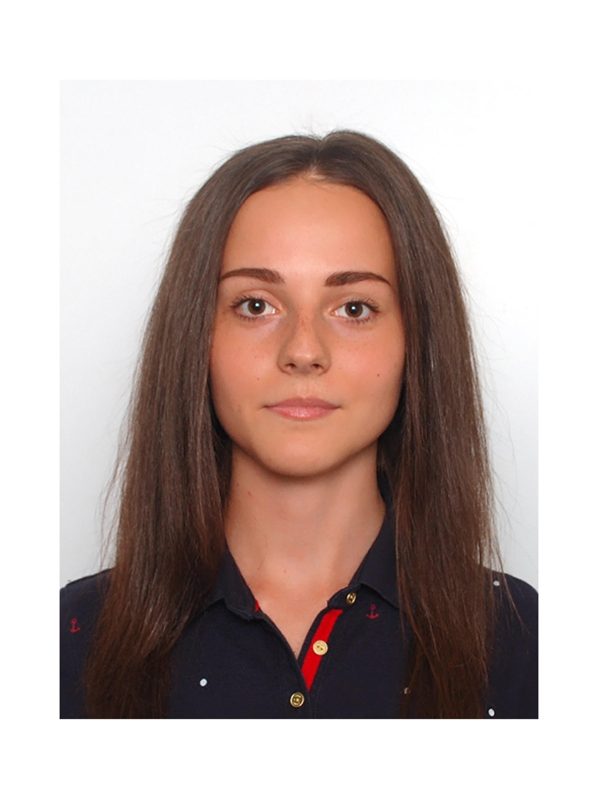

Nataliia Medvedenko
medvednat@gmail.com
+4901702382165
Instagram
Telegram
Personal Information
Date of birth: 16 April 1996
Marital status: single
Personal skills
high willingness to learn, good communication skills and team player, punctual, attentiveness to details, stress tolerance, problem solving abilities, organized, self-motivated
Experience
October 2017 - May 2022
Company: Leacond, distributor of Daikin Industries, Ltd. in Ukraine
Position: Manager of foreign economic activity, Logistics Dept.
Job responsibilities: the formation and control of orders; registration of documents and certificates for the import of equipment; organization of effective promotion of goods and services in the spheres of production; coordination of interests of different parts of the logistics system in order to achieve the company's goals.
Education
2013 – 2017
State Higher Educational Establishment Kyiv National Economics University named after Vadym Hetman
BACHELOR DEGREE program subject area «International Economy»
2017 - 2019
State Higher Educational Establishment Kyiv National Economics University named after Vadym Hetman
MASTER DEGREE program subject area «International Business Management»
Additional Skills
Languages:
Ukrainian and Russian - Native speaker
English – Upper-Intermediate Level
German – Elementary Level
Computer skills:
Windows, Word, Excel, Outlook Express, Photoshop, Power Point, Internet, 1С, SAP
Driving License:
Driving License Category B